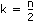
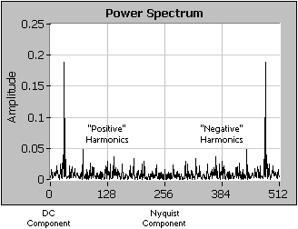
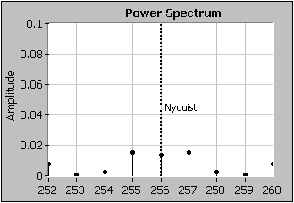
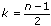
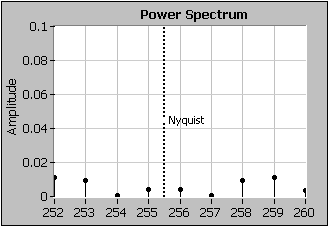

Computes the Power Spectrum, Sxx, of the input sequence X. Wire data to the X input to determine the polymorphic instance to use or manually select the instance.
Power Spectrum returns the double-sided power spectrum of X. If the input signal is in volts (V), Power Spectrum has units of volts-rms squared (Vrms2). If the input signal is not in volts, Power Spectrum has units of the input signal unit-rms squared.
error returns any error or warning from the VI. You can wire error to the Error Cluster From Error Code VI to convert the error code or warning into an error cluster.
Power Spectrum returns the double-sided power spectrum of X. If the input signal is in volts (V), Power Spectrum has units of volts-rms squared (Vrms2). If the input signal is not in volts, Power Spectrum has units of the input signal unit-rms squared.
error returns any error or warning from the VI. You can wire error to the Error Cluster From Error Code VI to convert the error code or warning into an error cluster.
When the number of samples, n, in the input sequence X is a valid power of 2
n = 2m
for m = 1, 2, 3, …, 23,
the Power Spectrum VI computes the fast Fourier transform of a real-valued sequence using the a fast radix-2 FFT algorithm and efficiently scales the magnitude square. The largest Power Spectrum the VI can compute using the FFT is 223 (8,388,608 or 8M).
When the number of samples in the input sequence X is not a valid power of 2 but is factorable as the product of small prime numbers, the Power Spectrum VI computes the discrete Fourier transform of a real-valued sequence using an efficient DFT algorithm and scales the magnitude square. The largest Power Spectrum the VI can compute using the fast DFT is 222 – 1(4,194,303 or 4M – 1).
Let Y be the Fourier transform of the input sequence X and n be the number of samples in it. You can show that
|Yn –i|2 = |Y–i2|.
You can interpret the power in the (n – 1)th element of Y as the power in the –ith element of the sequence, which represents the power in the –ith harmonic. You can find the total power for the ith harmonic (DC and Nyquist component not included) using
Power in the ith harmonic = 2|Yi|2 = |Yi|2 + |Yn – 1|2 0 < i < n/2
The total power in the DC and Nyquist components are |Y0|2 and |Yn/2|2 respectively.
If n is even, let . The following table shows the format of the output sequence Sxx corresponding to the Power Spectrum.
Array Element
Interpretation
Sxx0
Power in DC component
Sxx1 = Sxx(n – 1)
Power at frequency f
Sxx2 = Sxx(n – 2)
Power at frequency 2f
Sxx3 = Sxx(n – 3)
Power at frequency 3f
Sxx(k – 2) = Sxxn – (k – 2)
Power at frequency (k – 2)f
Sxx(k – 1) = Sxxn – (k – 1)
Power at frequency (k – 1)f
Sxxk
Power in Nyquist harmonic
The following illustration represents the preceding table information.

Notice that the power spectrum is symmetric about the Nyquist frequency as the following illustration shows.

If n is odd, let . The following table shows the format of the output sequence Sxx corresponding to the Power Spectrum.
Array Element
Interpretation
Sxx0
Power in DC component
Sxx1 = Sxx(n – 1)
Power at frequency f
Sxx2 = Sxx(n – 2)
Power at frequency 2f
Sxx3 = Sxx(n – 3)
Power at frequency 3f
Sxx(k – 2) = Sxxn – (k – 2)
Power at frequency (k – 2)f
Sxx(k – 1) = Sxxn – (k – 1)
Power at frequency (k – 1)f
Sxxk = Sxxn – k
Power at frequency kf
The following illustration shows that when n is odd, the power spectrum is symmetric about the Nyquist frequency, but the Nyquist frequency does not fall on a frequency bin.

The format described in the preceding tables is an accepted standard in digital signal processing applications.
 Add to the block diagram
Add to the block diagram Find on the palette
Find on the palette


 f
f